| 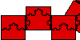 |
We cover a shape with boxes and find how the
number of boxes changes with the size of the boxes. |
| 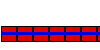 |
If the object is 1-dimensional,
such as the unit line segment,
we expect N(r) = 1/r. (It's 1/r instead of r because as the
squares get smaller, more will be needed to cover the object.) |
| 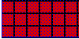 |
If the object is 2-dimensional,
such as the (filled-in) unit square,
we expect N(r) = (1/r)2. |
| 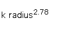 |
For more complicated shapes, the relation between N(r) and 1/r may
be a power law, N(r) = k(1/r)d. |
| 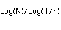 |
This leads to the definition of the box-counting
dimension. |
| 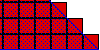 |
To show the box-counting dimension agrees with the standard dimension in
familiar cases, consider the filled-in triangle. |
| 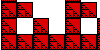 |
For the Sierpinski gasket we
obtain db = Log(3)/Log(2) = 1.58996 ... . The gasket is more than
1-dimensional, but less than 2-dimensional. |
| 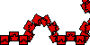 |
For the Koch curve we
obtain db = Log(4)/Log(3) = 1.26186 ... . The Koch curve is more than
1-dimensional, but less than 2-dimensional. |
| 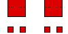 |
Now we compute the box-counting dimension of the
Cantor Middle Thirds Set. |
|
What happens when we measure an object in
the wrong dimension? |
| 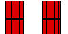 |
and of a combination of the
Cantor set and line segment. |
| 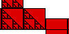 |
and of a combination of the
Gasket and line segment. |
| 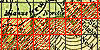 |
Here is some Java software to
investiate properties of the box-counting dimension. |
| 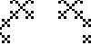 |
Here are some practice problems. |
| 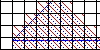 |
Finally, here is a common mistake
in computing box-counting dimensions. |